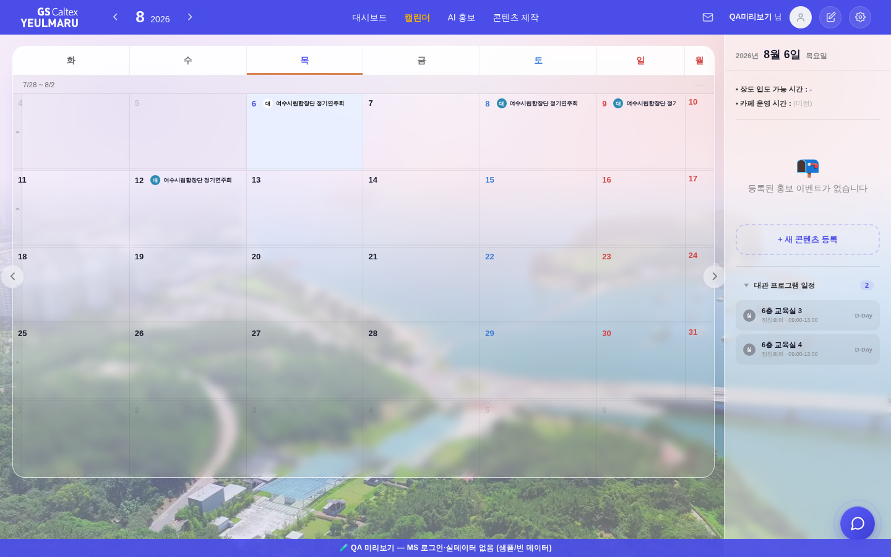
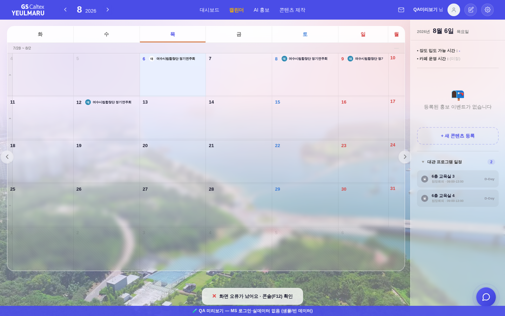
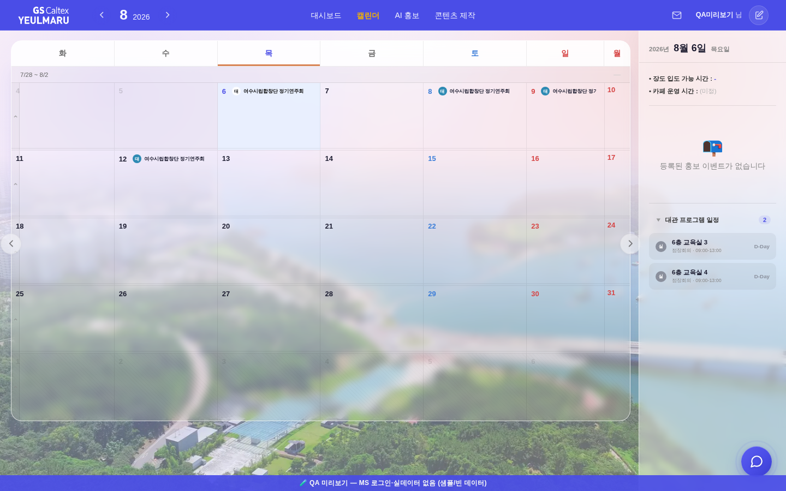

같은 조작 = onclick 핸들러가 예외를 던진다(260806 위저드 사고와 같은 모양). 전 = 화면·콘솔 모두 우리 쪽 안내 0 → 「눌러도 아무 일도 안 일어남」이 사용자가 아는 전부였다.
| 화면 안내 | 문구 | 콘솔 기록 | |
|---|---|---|---|
| 전 — 관리자 (핸들러 없음) | ❌ 안 뜸 | (없음) | 0건 |
| 후 — 관리자 | ✅ 뜸 | 화면 오류가 났어요 · 콘솔(F12) 확인 | 1건 |
| 후 — 일반 사용자 | ❌ 안 뜸 | (없음) | 1건 |


